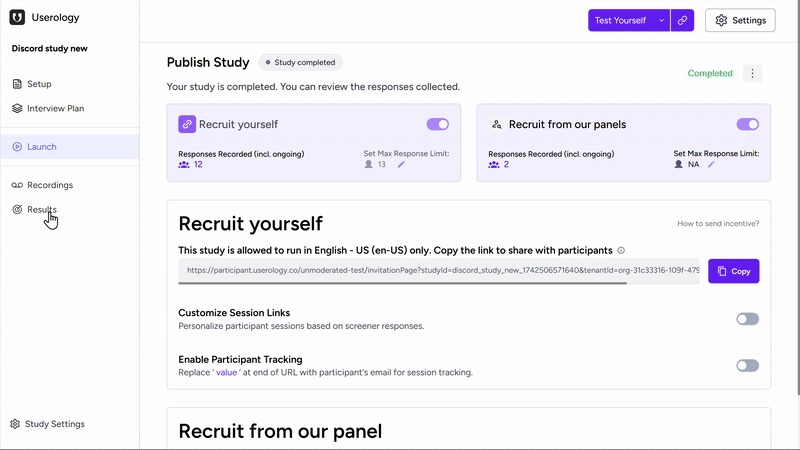
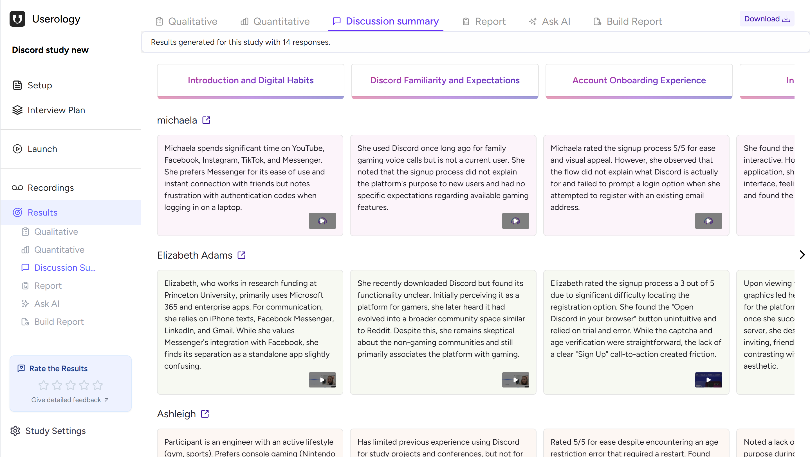
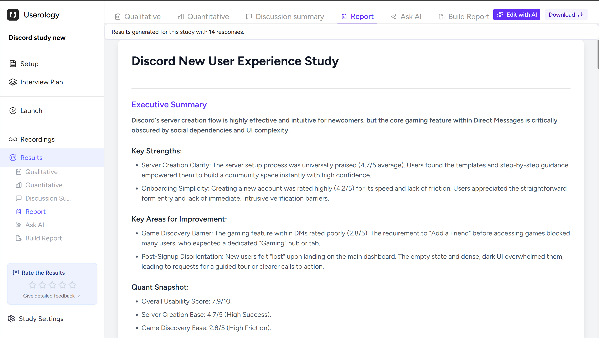
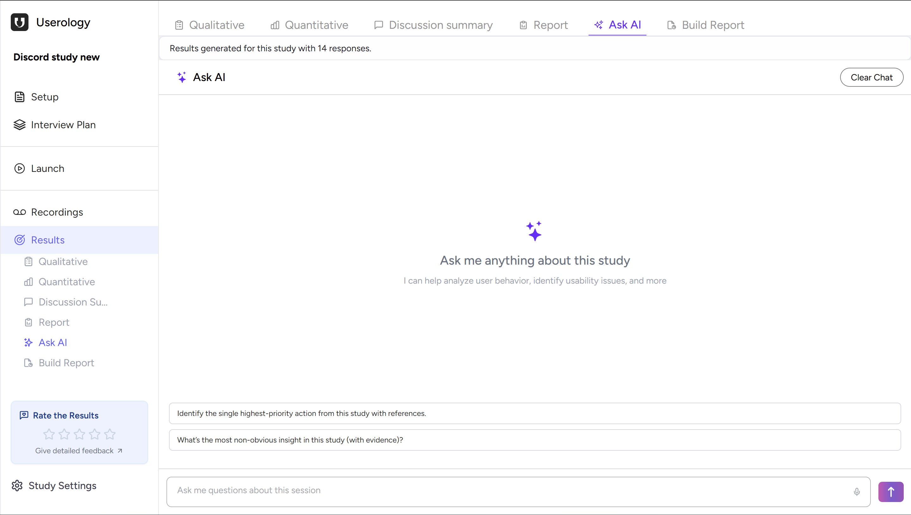
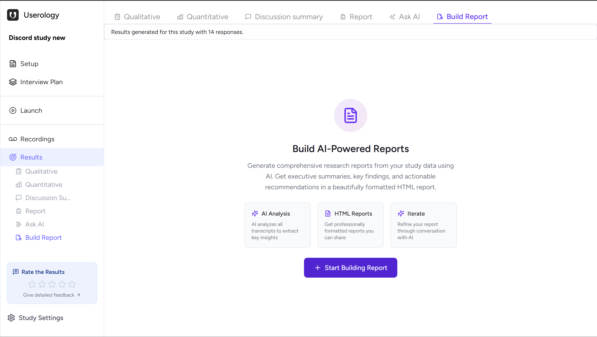
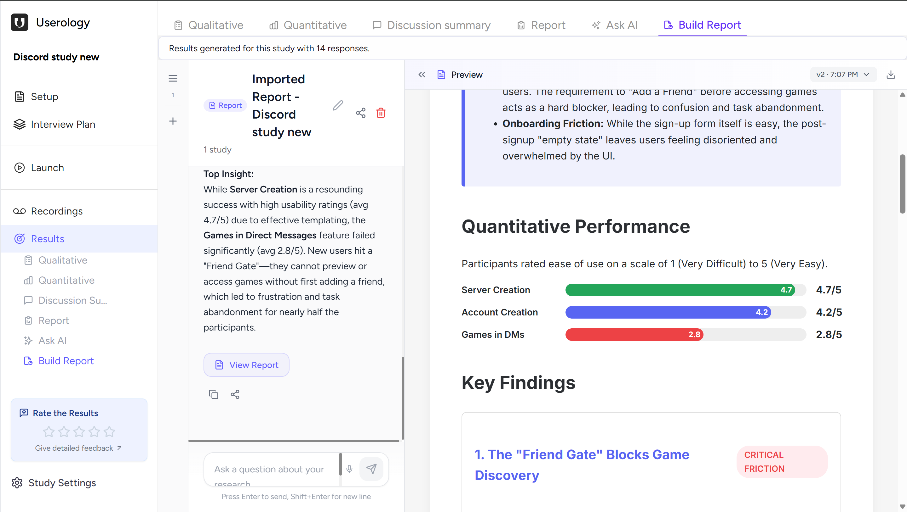

Once your study is published and participants begin completing sessions, Userology automatically organizes everything into the Results section once you click on the Conclude and Generate Results button (in the Recordings section). When your final report is ready, you'll receive an email notification.

The Results section gives you processed insights and an overall view of your research. It helps you identify patterns and key findings, and turn observations into clear, shareable insights.
Start by reading the high-level executive summaries, dive deeper with Ask AI when you have specific questions, and build custom reports tailored to specific needs.
What's Inside Results
Results are divided into sections, each serving a different need:
Qualitative Results – AI-synthesized qualitative insights derived from participant sessions
Quantitative Results – Task metrics, ratings, and measurable outcomes
Discussion Summary – Participant responses in key moments in the study
Report – A structured executive document
Ask AI – Conversational exploration of insights
Build Report – Custom AI-generated reports
For patterns and insights that emerge across participant responses, explore Qualitative Results. For trends, task metrics, and measurable outcomes, see Quantitative Results. This article covers other synthesis tools: Discussion Summary, Report, Ask AI, and Build Report.
Discussion Summary
Discussion Summary displays participant responses across key moments in a matrix—columns for discussion topics, rows for participants. Each cell contains an AI-generated summary of what that participant said about that topic, with links to the original recording.

While Qualitative Results surface AI-generated insights across the study, Discussion Summary lets you compare how participants responded at the same key moments - making it easier to spot alignment and differences.
Report
The Report combines qualitative insights, quantitative data, and AI synthesis into a structured research document. It includes an executive summary, study methodology, participant background, key findings with supporting quotes, an empathy map, quantitative performance data, and suggested next steps.

You can edit the report manually, refine it using Edit with AI, or download it to share with stakeholders.
Ask AI
Ask AI lets you ask any question about your results and delve deep into the details. Answers are grounded in your qualitative and quantitative data, so you can explore findings, clarify insights, or investigate specific areas on demand.

Example questions: "What is the highest-priority usability issue?", "Which finding is supported by the most users?", or "What evidence backs this recommendation?"
Build Report
Build Report lets you create custom reports tailored to specific needs. You describe what you want, and AI generates a report based on your qualitative and quantitative data. You can refine it through conversation and create multiple reports from the same study—useful when different stakeholders need different views.

Once generated, your report appears in a preview panel where you can review the content, continue the conversation to refine it, or download the report to share it with stakeholders.

How to Choose the Right Results Option
| Want AI-synthesized qualitative insights? | → Qualitative Results |
| Need metrics and task performance? | → Quantitative Results |
| Looking for patterns across participants? | → Discussion Summary |
| Need a complete research document? | → Report |
| Have specific questions? | → Ask AI |
| Creating a custom deliverable? | → Build Report |
| Analyzing multiple studies? | → AI Synthesis Studio |
If you need further help, please email us at support@userology.co
Was this article helpful?
Thank you for your feedback!